GPD Win2 (2019年モデル) を買った
生活が崩壊してましてね。楽しいことが何もなかったので、何か楽しくならないかなーと思って新たな Windows マシンを買いましたよ…。
目次
- 自分の Windows 遍歴
- キー配列がキレイな UMPC が欲しい
- GPD Win 2 の2019年モデル
- 外観
- スペック
- ゲームボタンとキーボード
- その他
- CPU ファンは常に回っている・SSD が熱い
- Windows PC としての動作は快適
- 想像以上に快適な Windows マシン
自分の Windows 遍歴
自分は Windows 3.1、95 辺りからパソコンに触れ始めたので、一番身体に馴染むネイティブな OS は Windows だ。プログラマになってからは Mac や Linux に触れて、逆に Windows が使いづらいと感じる部分もあったりするが、最近は WSL も馴染んできて、やっぱり Windows を触りたいなと思うことが多い。
自分が現在持っている Windows マシンは以下のとおり。
- 2017-07-29 ～ : ドスパラ Galleria XG … 母艦のデスクトップマシン
- 2017-11-25 ～ : Asus ZenBook3 UX390UA-512GP … 12インチノート
- 2020-03-15 ～ : Lenovo ThinkPad X250 … Linux とのデュアルブート
母艦のガレリアくんに沢山 HDD を載せていて、データは全てココで管理しているので、ガレリアくんの環境が自分の全てのベースにある。もう4年目のマシンになるワケだが、GPU も良いヤツ積んでるし性能的に不便したことはない。
持ち運ぶマシンとしては、12インチ MacBook (2018-08-26 ～) や Lenovo IdeaPad Duet Chromebook (2020-12-08 ～) も持っているが、Windows マシンでいうと ZenBook くん。まれに液晶の描画がバグったりして、いつ壊れるか不安ではあるが、使い心地やスペック的には申し分ないので、このまま使い切りたい。
ThinkPad X250 は Linux 専用マシンとして中古を購入したのだが、たまたま M.2 SSD が増設されていて、そちらに Windows 環境が入っていたので放置している。物理的にドライブが別れた、Linux と Windows のデュアルブートマシンとなっているのでカッコイイが、ほぼ使っていない。使っていないモノでいうと、Raspberry Pi 4B RAM 4GB (2020-05-16 ～) も持っていたりするな。コレで PC 系は全部か。
キー配列がキレイな UMPC が欲しい
最後にちょっとだけ触れたラズパイなんかがそうだが、自分はずっと UMPC に憧れていた。12インチ MacBook や、そのクローンといえるスペックの ZenBook を選んだのも、12インチ、1kg 未満というコンパクトさを望んで選んだものだった。
以前持っていた Asus Chromebook Flip や、現所有の IdeaPad Duet は10インチ。自分は US 配列キーボードを好むが、日本語配列よりもキー数が少ない US 配列でも、筐体が10インチを切ると、さすがに変則的なキー配列のモノが多くなってくる。
変則的なキー配列はどうしても嫌なので、コレまで様々な UMPC が発表されても、キー配列を見ては「はい、ナシ。」と購入せずに来ていた。
また、UMPC はスペック的にもイマイチなモノが多く、買ったところで何に使えるんだ、と思うような低スペックマシンばかりであった。自分が購入するマシンはほぼ全て Core i7・RAM 16GB を基準にしてきたので、Atom だとか Celeron だとか、RAM 4GB だとか言われても、Windows マシンとしては無理があるだろうと思って選ばなかった。
「買ったところで何をするんだ」というそもそも論もあって。キー配列にこだわるということはキー入力も多用するつもりでいるので、ゴロ寝 PC というつもりでもない。それなら Chromebook をタブレットスタイルで使えばやれることだし。でも、ちょこっとだけ Windows 環境を触りたい時に、ガレリアを立ち上げるのも億劫だし、12インチの ZenBook でも少々大仰だったりすることもあって。というか所有機が多すぎて全てを常には充電していないので、電池がなくなってることもあったりする。
UMPC が欲しい動機自体が希薄なのだが、求めるスペックには妙なこだわりが強く、コレまで自分が望むような UMPC がなかったので、特に買うこともなく現在まで至った。
GPD Win 2 の2019年モデル
何となく UMPC 関連の動画を YouTube で漁っていたら、GPD Win 2 というマシンを見つけた。

元は2018年に発売された Core m3-7Y30 搭載機だったが、2019年モデル以降は Core m3-8100Y になったようだ。2021年にはマザーボードがちょっと変わって、底面がメタルカバーになって排熱性能が向上したらしい。
- GPD WIN2 | 株式会社リンクスインターナショナル
- 2018年モデルをベースとした説明
- Core m3-8100Y/256GB SSD搭載になった「GPD WIN 2」が発売 ～基板刷新で放熱性、オーディオ音質が向上 - PC Watch
- 2019年モデルの比較
- GPD WIN2 – GPDダイレクト
- 2021年モデルの情報あり
ほんで今回、2019年モデルの中古を見つけたので、試しに買ってみた次第。
外観
外箱。
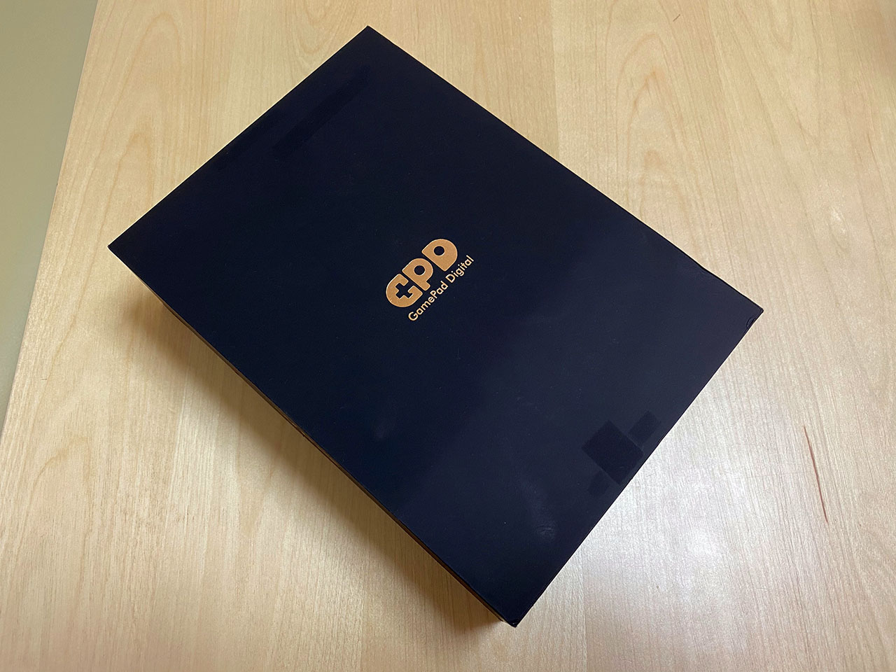
付属品は USB-C ケーブルと AC 電源。FC53 というモデルで、GPD 純正らしい。一応 USB-PD 対応で、5V / 3A、9V / 2.67A、12V / 2A 対応みたい。
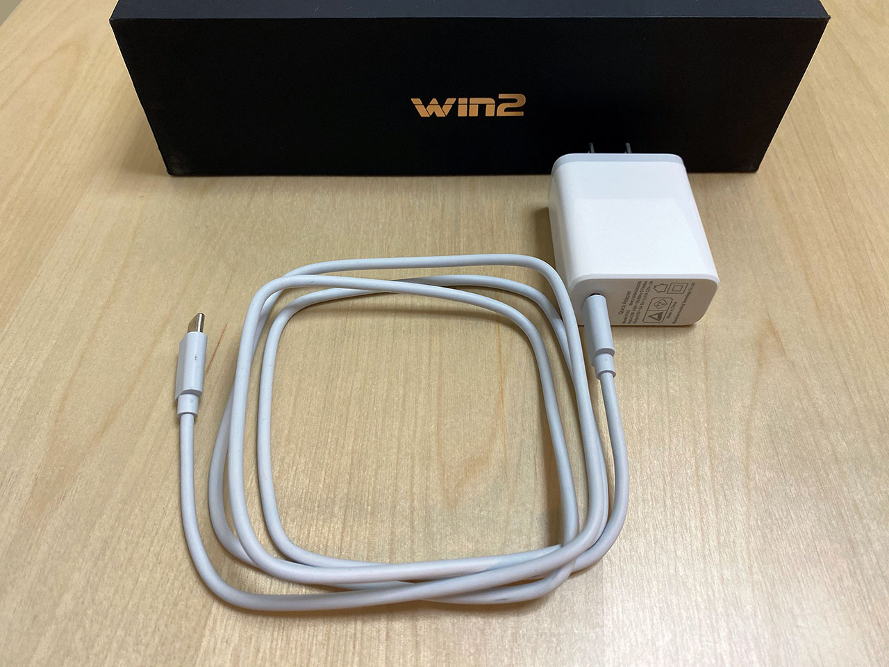
見た目。
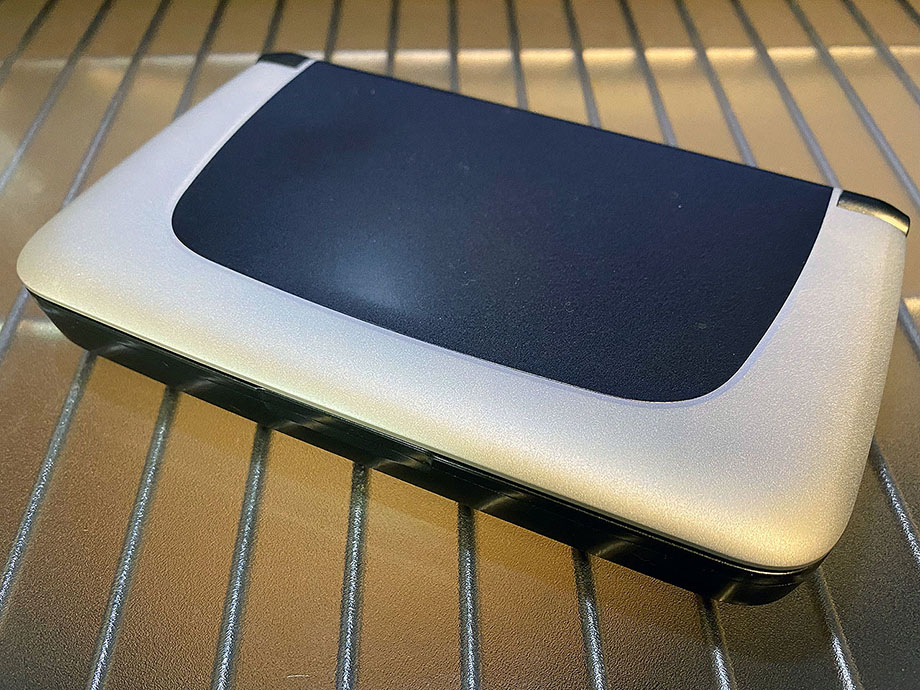
開いたところ。
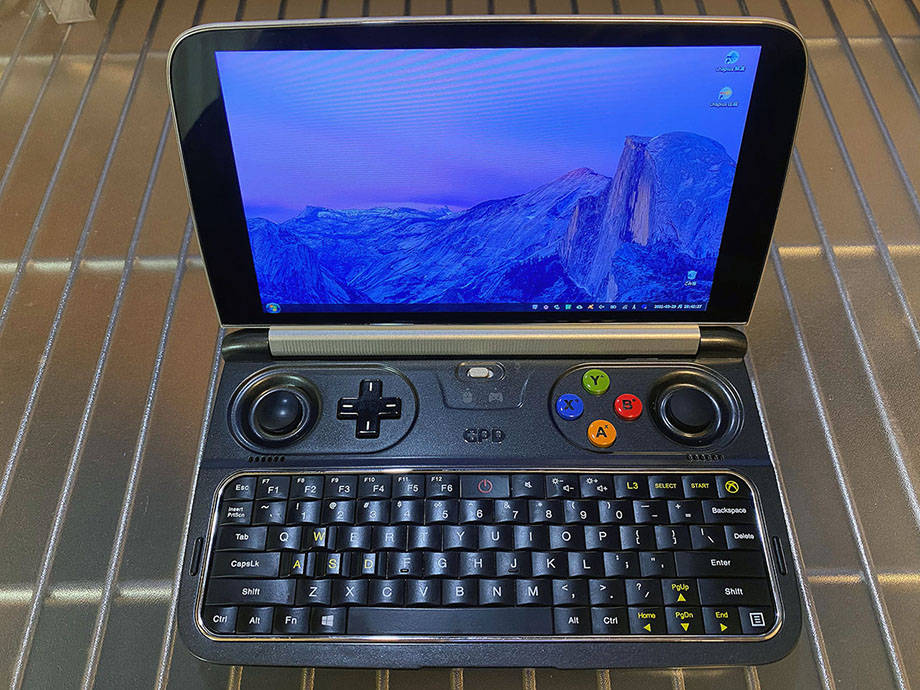
閉じた時の幅・奥行きを、手元にあった iPhone7 Plus (幅158.2mm・幅77.9mm) と何となく比較。GPD Win2 は幅162mm × 奥行99mm なので、長辺はかなり近い。
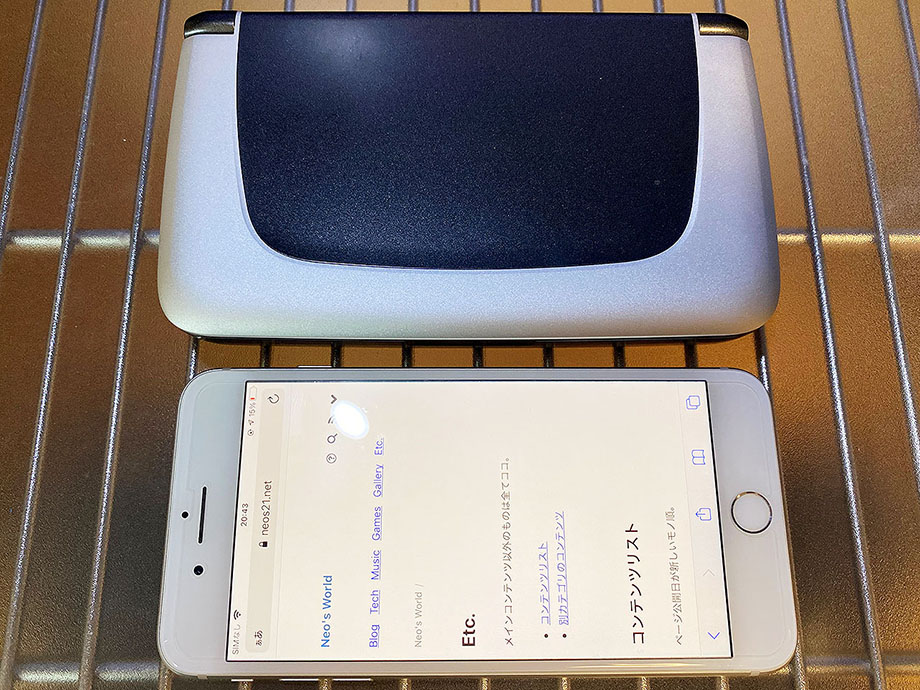
厚さを比較。iPhone7 Plus は 7.1mm、GPD Win2 は 25mm なので、さすがに GPD Win2 の方が厚い。背面のボタンやインターフェースもお分かりいただけるだろうか。
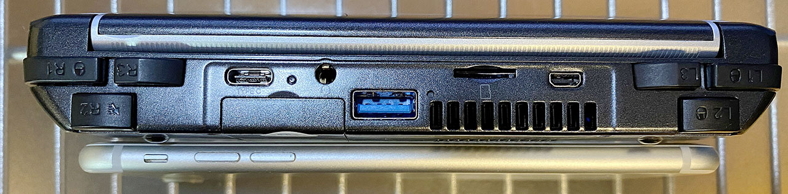
背面。ソフマップの中古品を買ったのでソフマップのシールあり。ファンの通気口と、SSD へアクセスできるところがある。2021年モデルは背面がメタルカバーになっていて銀色で、通気口も広いのだが、コレは2019年モデルなので黒い。
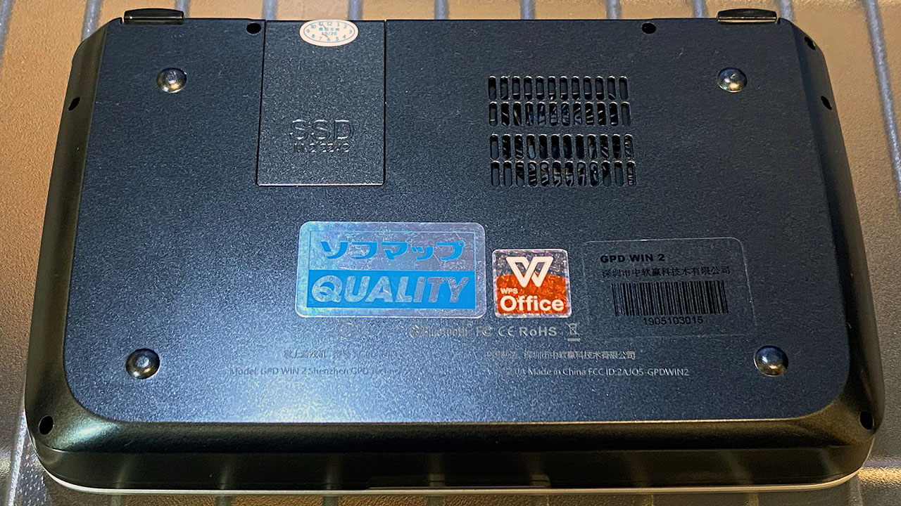
スペック
購入した GPD Win 2 のスペックは以下のとおり。
- CPU : Core m3-8100Y Amber Lake 1.1GHz ～ 3.4GHz
- GPU : Intel UHD Graphics 615
- RAM : 8GB
- SSD : 256GB M.2 2242
- 液晶 : 6インチ・タッチパネル・1280x720px
- 重量 : 460g
- サイズ : 幅162mm × 奥行99mm × 高さ25mm
- キー配列 : US 配列
- インターフェイス : USB-A 3.0・USB-C 3.0・microSD・Micro HDMI・LAN・3.5mm イヤホンジャック
CPU と内蔵 GPU が、Core m3-8100Y・Intel UHD Graphics 615 にバージョンアップされているモデル。SSD も 256GB で十分。M.2 だから速い。メモリは LPDDR3-1866 らしいが、8GB 積まれていて、十分常用に足るスペックであろう。
6インチというコンパクトサイズ。CPU ファンがあるためか、本体の厚みはあるが、縦横の大きさは iPhone 11 Pro Max など、少し大きめのスマホ程度のフットプリントといった感じ。前述の写真のとおりだ。システム手帳でも握るかのように、片手で持ち歩けるぐらいのサイズだ。
重量は 460g。大変軽いはずなのだが、このサイズにしては重く感じる。ちょっとずっしりくるので、システム手帳みたいな軽やかさがちょっとないかもしれない…。ｗ
これだけ小さいのに、液晶はタッチパネルで、720p (HD) の解像度がある。Full HD (1920x1080) まで行っちゃうと文字が小さくなりすぎてしまうので、コレぐらいでちょうど良い感じ。ディスプレイは、キーボードと水平に寝るぐらいまでは倒せる。2-in-1 PC のように裏返すことはできないので、タブレット的な扱い方はできない。
以下は GPD Win2 で撮影したスクリーンショット。720p なのが分かるだろうか。
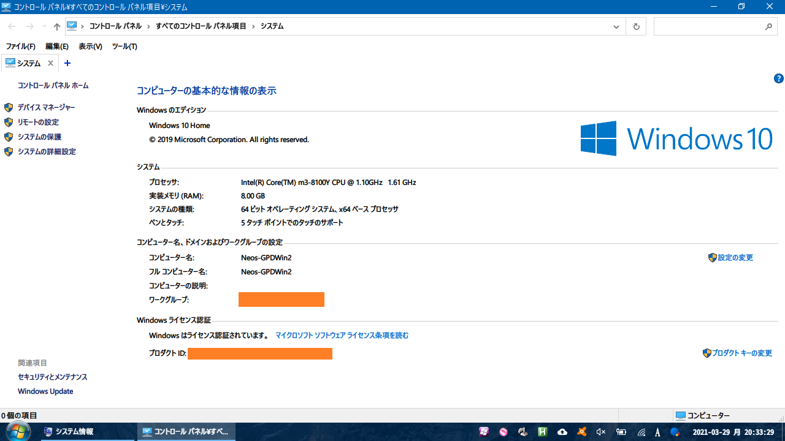
内蔵 GPU の情報。
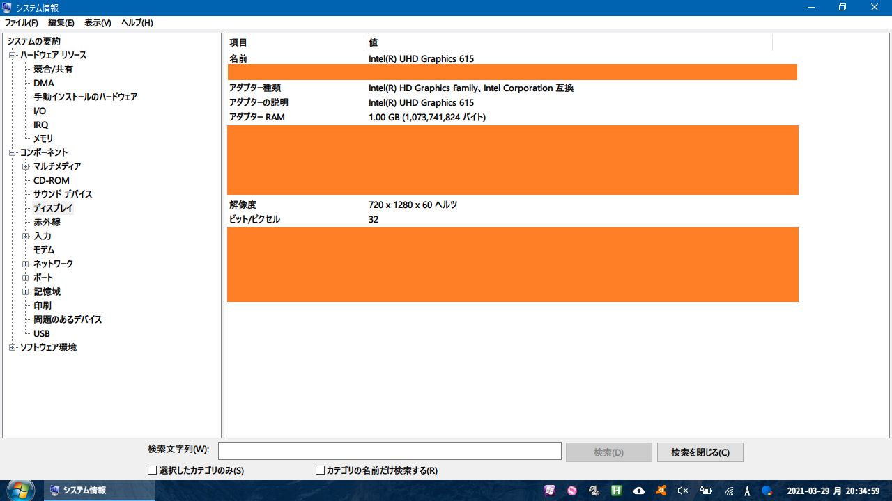
ゲームボタンとキーボード
GPD Win 2 は Windows PC であるものの、携帯ゲーム機的なコンセプトのマシンなので、スティックや LR ボタンなんかが付いていたりする。搭載されているものは以下のとおり。
- 本体中央に「XInput ゲームパッドモード」と「マウスモード」を切り替えるスイッチがある。「マウスモード」にすると、スティックや LR キーがマウスとして使用できる
- 3D ジョイスティック : 左右に2つ
- 「マウスモード」では右のジョイスティックがマウス操作になる。左のジョイスティックは WASD キーを入力する
- D-Pad 十字キー : 左側に1つ
- 「マウスモード」では、上下がマウススクロール、左が PageDown、右が「←」キーの入力になる。ブラウザ操作がしやすくなる感じ
- ABXY ボタン
- 「マウスモード」では上下左右の矢印キー入力になる
- L1・R1・L2・R2・L3・R3 ボタン : 本体背面に位置する
- 「マウスモード」では L1 が左クリック・R1 が右クリックになる
- L2 はマウスのホイールクリックに相当
- R2 は押している間、マウス操作が俊敏になる
- L3 は End キー
- R3 は「↓」キー
- キーボード : US 配列ベース
- 基本のキーは US 配列どおりで、右端のキーも普通の位置にあって良い
- F7～F12 キーが Fn キーとのコンボになっている
- 音量・画面光量・L3・Select・Start・Xbox キーなどがある
- 左右に Ctrl・Alt キーが1つずつある。左右 Alt を使った Alt-IME-AHK なんかが使いやすい
- 「マウスモード」時のボタン類にアサインされたキーなども含めると、通常のキーボードと比べて存在しないのは、ScrollLock・Pause・NumLock・テンキー程度なので不自由しないだろう
「マウスモード」と「ゲームパッドモード」の切り替えができるのが面白い。Windows マシンとして普通に使う際は「マウスモード」にしておいて、右スティックでマウス操作、L1 キーでクリック、といった感じで、両手で握った形で使える。
個人的には左スティックでマウス操作ができたら良かったなーと思ったのだが、こちらは WASD キーがアサインされていて、ホントにゲーム向けなのだなーと思うなど。十字キーや ABXY キーなどにも色々とキーアサインされていて、覚えなくても使えるけど、覚えて使いこなせるとかなり Windows の操作が快適に行えて意外だった。
キーボードも変則的なところは少なくて良い。サイズ的に、10本の指でタッチタイピングすることは出来ないが、両手で本体を握って両手親指でポチポチ押していく際も、自然に操作できて良い。
その他
Wi-Fi・Bluetooth も当然使える。ラズパイだと頻繁に Wi-Fi や Bluetooth が切れてしまい、無線での利用が難しかったのだが、GPD Win 2 だと Wi-Fi 経由で共有ドライブにアクセスして、数 GB の動画ファイルを比較的サクサク見たりできた。
USB-A と USB-C ポートが1つずつあって、この筐体サイズながら意外と色々繋げられる。充電は USB-C ポートから行える。このポートに USB-C ハブを繋いでみたら、充電しながらもう一つ USB-A 機器を繋ぐことができた。
スピーカーはそこそこ音量が出る。イヤホンジャックもあって、このサイズでもいたれりつくせり。
Micro HDMI 端子もあるので、あとは適当な USB ハブなんかを用意してやれば、外部のマウス・キーボード・液晶・スピーカーを接続して使うことだってできそうだ。
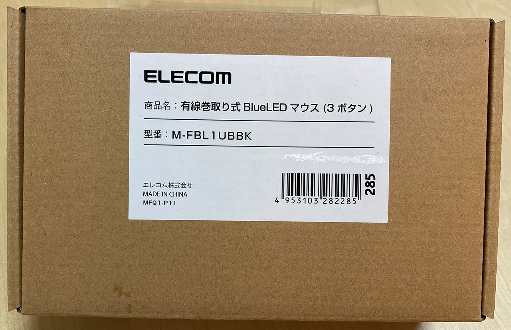
↑ Raspberry Pi 4 用に買ったミニマウス、Elecom M-FBL1UBBK。USB 接続でケーブルが巻取り式。コンパクトで使いやすい。
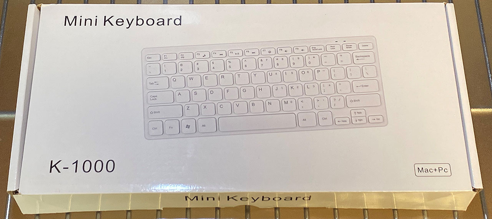
↑ コレも Raspberry Pi 4 用に買ったミニキーボード。メーカ不明の K-1000 というモノ。標準的な US 配列で問題なし。
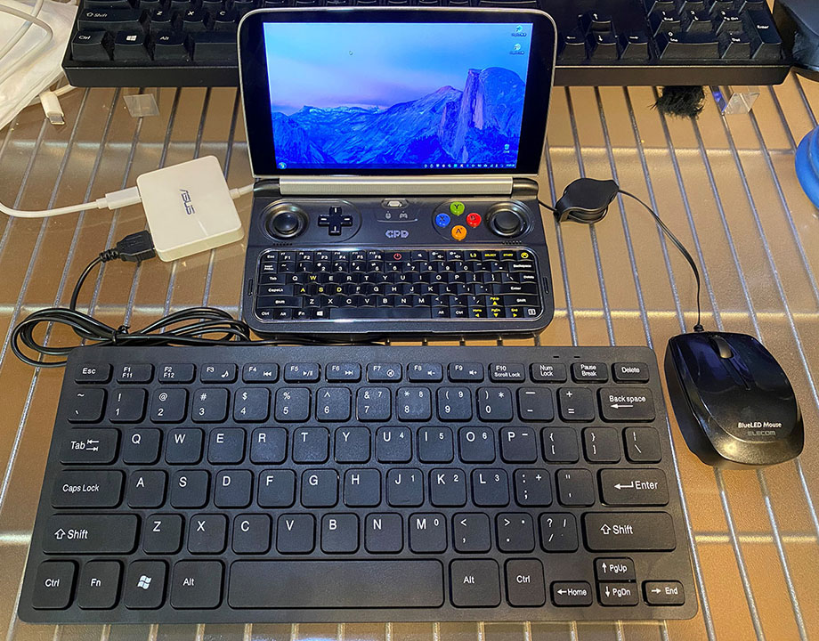
Asus ZenBook3 に付属していた USB-C ドック (本体の左にある白いヤツ) を使って、充電ケーブル (USB-C) とキーボードの USB-A を接続。さらに、本体の USB-A ポートに直接ミニマウスを接続した。デスクトップマシンっぽく使える。ｗ
Micro HDMI 端子もあるので、Raspberry Pi 4 で使っているケーブルを流用して、外部モニタに接続しても良いかも。そしたらホントにミニ・デスクトップ PC みたいな使い方できるなぁ。
CPU ファンは常に回っている・SSD が熱い
CPU ファンは、基本ずっと回っている。ZenBook3 もそうなのだが、この手の小さい筐体に載っている CPU ファンだと、キィーーンという高音が鳴るので、一度気にし始めるとずっと気になってしまうかもしれない。「電源オプション」の設定次第で多少緩和できるようではある。
M.2 SSD スロットは本体底面にあって、両手で握った時の右手が当たる位置にある。これが割とすぐ高温のアツアツになるので、あんまり持って色んな操作をやる気にならない。
本体重量 460g というのは、意外とずっしりくる。携帯ゲーム機として扱うつもりでいると、ちょっと重たいかもしれない。Nintendo Switch はジョイコンが付いた状態で 398g、Wii U GamePad は 500g 程度だったらしいので、Switch より重く、WiiU GamePad ぐらいのつもりでいた方が良いかもしれない。
Windows PC としての動作は快適
コレだけゲーム機としての利用を意識した GPD Win2 だが、自分はゲームをするつもりがなく、ブラウジングしながらちょこっと開発したり出来たらいいかなーなんて思いでいた。
OS をアップデートし、WSL2 を入れ、Node.js を入れてみたりしたが、その間の Git 操作や VSCode の操作なんかはかなり快適だった。Wi-Fi の通信速度も安定して速いし、CPU やメモリ不足もあまり感じなかった。
以下のように、所有機の CPU と比較すると、まぁまぁ数値は負けているところが多いのだが、ターボブースト時のクロック数が高いのと、Intel UHD グラフィックスのおかげか、体感としてはあまり差を感じないぐらいだった。
- Intel Core i7-5600U vs. Intel Core m3-8100Y - ベンチマークと技術データ
- ThinkPad X250 に搭載の i7-5600U との比較
- Intel Core i7-7600U vs. Intel Core m3-8100Y - ベンチマークと技術データ
- ZenBook3 に搭載の i7-7600U との比較
- Intel Core i7-7Y75 vs. Intel Core m3-8100Y - ベンチマークと技術データ
- 12インチ MacBook に搭載の i7-7Y75 との比較
数値的には、12インチ MacBook の2017年特盛モデルの CPU と良い勝負だろうか。でも、体感はかなり良い感じ。
Chocolatey でソフトをインストールしている時など、高負荷がかかる作業が長く続くと、CPU ファンがガンガン回り続けても排熱処理が追いつかず、若干処理スピードが落ちる感じがあった。しかしそれでも画面全体がカクカクになったり、他のウィンドウが開けないようなことはなく、動作は快適だ。
想像以上に快適な Windows マシン
GPD Win 2 は、排熱性能を向上させた2021年モデルが販売完了している。既に後継機の GPD Win 3 が登場しているが、重量は 551g にアップしているし、筐体のデザイン的な好みは、個人的にはこの GPD Win 2 だ。
できれば排熱処理が向上している2021年モデルの方が欲しかったぐらい、SSD の熱は気になるところがある。買ってみて気付いた点だった。
しかし、スティックでマウスを操作する面白さ、意外と打ちやすいキーボード、しっかり音が出るスピーカー、豊富なインターフェース、そして十分な処理性能が、460g に詰まっているというところが、ロマンのある商品だ。
最近はリモートワークが多くなったが、出勤する機会も時々あったりするし、遊びに行く際も一応持って行っておくと、スマホでは事足りず、ちょっとだけ Windows を触りたい、というニーズにピッタリ来ると思う。